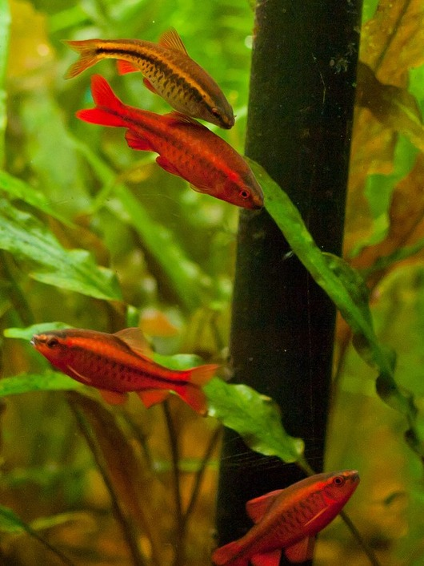
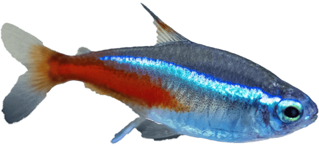
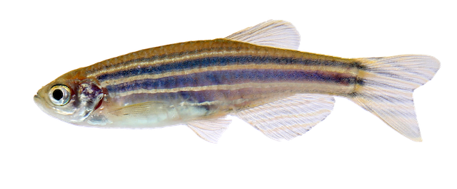

Freshwater Fish > Tropical Fish > Cherry Barb
Cherry Barb

| Basic Profile | |
|---|---|
| Family | Cyprinidae |
| Origin | Sri Lanka |
| Physical Characteristics | Cherry Barbs are primarily tan to dark brown with hints of red or orange. Males tend to be slender and turn a vibrant red during spawning, while females have lighter bodies with a dark lateral line. Interestingly, both males and females may look quite similar when they’re not in the spawning phase. |
| Full-grown Size | 2 inches |
| Life Span | 4 to 6 years |
| Diet | Omnivore |
| Tank Level | Top and middle dwellers |
| Compatibility | ||
|---|---|---|
| Aggressive level | Tank Mates | |
|  |  | |
| Peaceful | Neon Tetra | Zebrafish |
| Fish Demands | |
|---|---|
| Water Temperature | 74 F to 79 F (23 C to 27 C) |
| Water Hardness | 4 dKH to 10 dkH |
| pH Preferences | pH 6.0 to pH 7.0 |
| Minimum Tank Size | 25 gallons |
| Feeding | Cherry Barbs feed on fresh veggies, as well as pellets and frozen treats. |
Estimated Price (RM): 5-7 per Cherry Barb